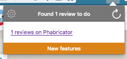
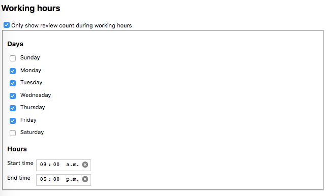

MyQOnly Release Notes
0.6.1
Bug fixes
- Fixed a bug where some services would get the same IDs.
Known issues
0.6
New features
Bug fixes
Known issues
0.5.4
Bug fixes
- Skipped 0.5.3 due to an AMO upload snafu.
- Migrating the storage schema to increase flexibility for upcoming features.
Known issues
0.5.2
Bug fixes
- Fixed the Bugzilla API key input so that it properly updates the configuration now.
Known issues
0.5.1
Bug fixes
- Fixed the refresh button so that it actually refreshes the count by asking services for updated counts. How embarrassing!
- Added a minimum delay of 250ms to the refresh state in the popup. Thanks to jhirsch for the patch!
Known issues
0.5
New features
- Redesigned the panel. The panel now has a button to refresh the review count, as well as a shortcut to the add-on options page.

- Added working hours support. Choose which windows of time you want to be informed about your review queue. Thanks to jhirsch for the initial implementation!

Bug fixes
- Made the Bugzilla API key input a password field
- Added a simple, and hopefully unobtrusive new feature notification system. To be used sparingly.
- Added a very simple debugging tool for generating Phabricator test cases (hover your mouse over the bottom-right part of the options page).
Known issues